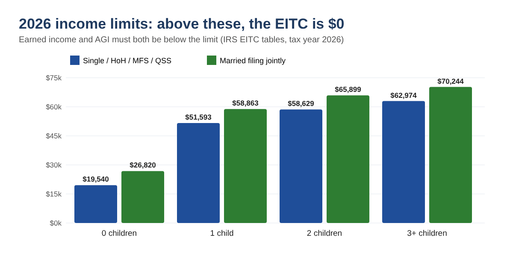
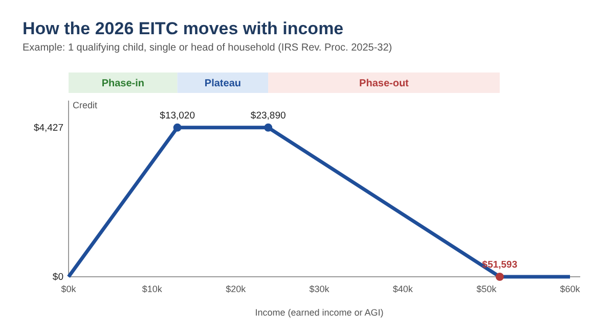
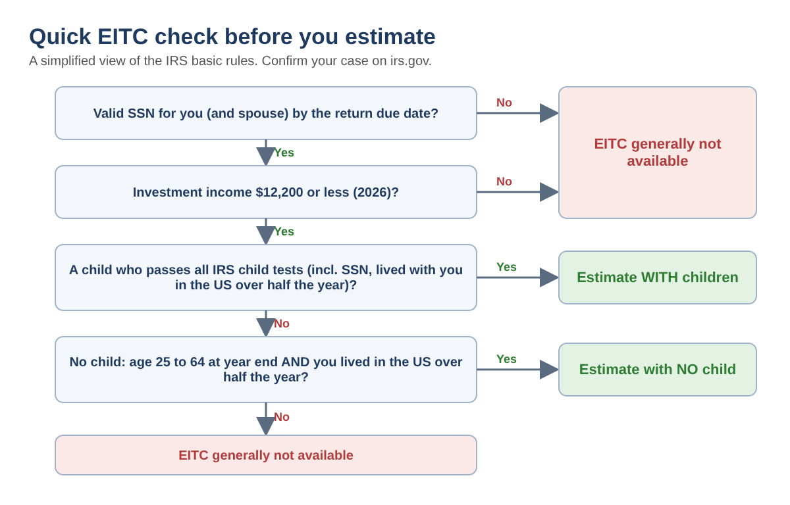

Every January, many workers, families and small business owners ask the same question: "Will I get the Earned Income Tax Credit this year, and about how much?" The EITC is a refundable federal credit for people who work and have low to moderate income, and it can be worth several thousand dollars for a family with children. It also changes every year, and it works differently from most credits: it first grows as you earn more, then levels off, then shrinks. If you are self-employed, there is one more twist, because your business profit counts as earned income.
This guide shows how to estimate the credit for tax year 2026 (the return you file in 2027) with a calculator or a simple spreadsheet, using the official IRS figures.
This post is general educational information, not tax or legal advice; please confirm your own situation with a licensed tax professional.
The EITC amounts change every year. For tax year 2026 they come from Revenue Procedure 2025-32, section 4.06. Your credit depends on the number of qualifying children and your filing status.
| Qualifying children | 0 | 1 | 2 | 3 or more |
|---|---|---|---|---|
| Earned income amount (credit stops growing) | $8,680 | $13,020 | $18,290 | $18,290 |
| Maximum credit | $664 | $4,427 | $7,316 | $8,231 |
| Phase-out starts, single / HoH / MFS / QSS | $10,860 | $23,890 | $23,890 | $23,890 |
| Income limit, single / HoH / MFS / QSS | $19,540 | $51,593 | $58,629 | $62,974 |
| Phase-out starts, married filing jointly | $18,140 | $31,160 | $31,160 | $31,160 |
| Income limit, married filing jointly | $26,820 | $58,863 | $65,899 | $70,244 |
Source: IRS Rev. Proc. 2025-32 and the IRS EITC tables page. Investment income must be $12,200 or less for 2026.

The EITC moves in three stages. In the phase-in stage, each extra dollar of earned income raises the credit. Once earned income reaches the "earned income amount", you are on the plateau and get the maximum credit. After income passes the phase-out start, the credit phases out until it reaches $0 at the income limit.

Why the larger of earned income and AGI? IRS Publication 596 shows this in its worked example: when AGI is different from earned income, the IRS worksheet looks up both amounts and the smaller credit applies.
In Excel or Google Sheets, put earned income in B1, AGI in B2, the earned income amount in B3, the maximum credit in B4, the phase-out start in B5 and the income limit in B6, then type:
=IF(MAX(B1,B2)>=B6,0,MAX(0,ROUND(MIN(B1*B4/B3,B4-B4/(B6-B5)*MAX(0,MAX(B1,B2)-B5)),0)))

| Example (2026) | Earned income | Phase-in credit | Reduction | Estimate |
|---|---|---|---|---|
| A. Single parent, 1 child, W-2 job | $28,000 | $4,427 | 15.98% × $4,110 = $657 | $3,770 |
| B. Married filing jointly, 2 children, wages $22,000 + side business $18,000 | $40,000 | $7,316 | 21.06% × $8,840 = $1,862 | $5,454 |
| C. Self-employed, no child, age 30 | $12,500 | $664 | 7.65% × $1,640 = $125 | $539 |
Example values only. In each example AGI equals earned income and investment income is $0. The IRS EIC Table uses $50 income ranges, so the amount on a real return can differ by a few dollars.
Two edge cases are worth testing. If example A also had $13,000 of investment income, the estimate would be $0 because it is over the $12,200 limit. If example A had wages of $20,000 but AGI of $30,000 (because of other income such as a pension), the phase-out would use the $30,000 and the estimate would drop to about $3,451. The "smaller of" rule matters most when earned income is low but AGI is higher: with 1 child, earned income of $5,000 and AGI of $30,000, the phase-in credit is $1,700 and the maximum minus the reduction is about $3,451, so the estimate is the smaller amount, $1,700.
IRS Publication 596 says you cannot get the credit if you (or your spouse, on a joint return) have an ITIN instead of an SSN. The SSN must be issued by the due date of the return, including extensions.
According to the IRS, a child without a valid SSN does not count as a qualifying child for the EITC, but you may still qualify for the smaller credit for workers without a qualifying child if you meet those rules, including the age 25 to 64 test.
The IRS says that beginning with tax year 2026, you may have to complete Schedule 3-A, Federal Public Benefit, if you claim the EITC. Check the Form 1040 instructions when you file.
IRS Publication 596 explains that if the credit was denied because of reckless or intentional disregard of the rules, you cannot claim it for the next 2 years, and for fraud, the next 10 years. After a denial you may need to attach Form 8862 to claim it again.
You can download the ready-made EITC Estimator 2026-2027 for free in the Free kit download box below (Excel + PDF guide, no sign-up).
Disclaimer: This article is general educational information only. It is not tax, legal or financial advice, and it does not decide whether you qualify or guarantee any credit or refund amount. Tax rules change and individual facts matter, so please confirm your own situation with the IRS EITC Assistant on irs.gov or a licensed tax professional before you file. State credits are not covered.